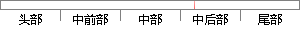

Few-Shots的情况给人赛前看一张或两张图片。
片段位置图

相似结果|
相似片段 1：眼镜，一张围巾）的图片构成，共计 400 张。测试集分三种情况来构造，第一种是每个人从 session2 中选择两张有眼镜遮挡的图片；第二种是每个人从 session2 中选择两张有围巾遮挡的图片
相似片段 2：，并将其量化，这符合并对应我们在3.3.2中的4种情况，这是一种基于认知的设定，因为很自然的，如果一张图像中有几个语义而另一张图像中有十几个语义，后者的语义标签完全覆盖前者，但是我们也不会认为两张图片是相
相似片段 3： 测试集有遮挡本实验的训练集依然是每个人两张没有遮挡的图片和两张有遮挡（一张眼镜，一张围巾）的图片构成，共计 400 张。测试集分三种情况来构造，第一种是每个人从 session2中选择两张有眼镜遮挡
|
※ 片段修改建议 ※
近似词参考：- 情况：环境 情形
系统自动生成语句：Few-Shots的环境给人赛前看一张或两张图片。
注：本片段修改建议为系统自动生成，仅供参考。